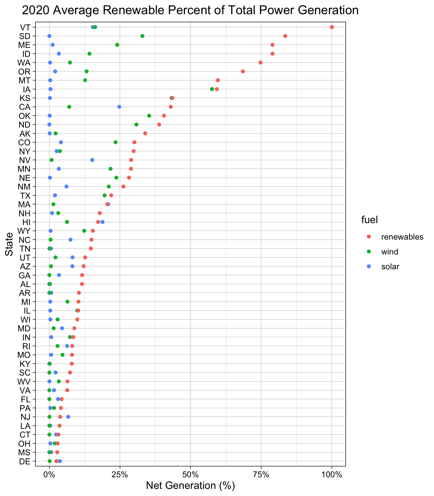

Chapter 5 Results
5.1 Renewable Fuel Adoption
The below chart explores the average percent of power generated in 2021 by each state that is produced by renewable energy sources. Renewable energy sources include wind, solar, geothermal, biomass, and hydroelectric power sources.

It is interesting to note that Vermont is already generating 100% of their power from renewable energy sources. Additionally, Mississippi has the lower percentage of power generated from renewables with these sources comprising just over 2% of the average 2021 power.
Some states have set Renewable Portfolio Goals (RPS) that specify that utilities must sell a certain percentage of electricity that is generated from renewable sources. Delaware set a goal in 2005 to achieve achieve power generation that is 25% renewables by 2025 (https://www.ncsl.org/research/energy/renewable-portfolio-standards.aspx); however, they have only achieved 3% renewables in the current year.
5.2 Macro Trends
To explore macro trends in the energy sources utilized by the United States as a whole, the time series for each power source is plotted from 2001 - 2021. It is seen below that in 2001 coal was the predominant electricity source for America. Coal had a steady power generation until it began to decline around 2010. Natural gas took off at this time and by 2021 is the biggest producer of energy. Conventional hydroelectric was one of the first renewable energy resources to appear at significant levels in the electricity power generation for the US. Both solar and wind power have slowly increased in the amount of power they produce.
We can explore the relationship between specific fuel types to determine which are correlated. From the plot below, it appears that coal is negatively correlated with both solar and natural gas. This is not necessarily surprising because natural gas is typically used to complement renewable energy sources and act as a form of stability to produce power when the sun isn’t shining or the wind isn’t blowing.